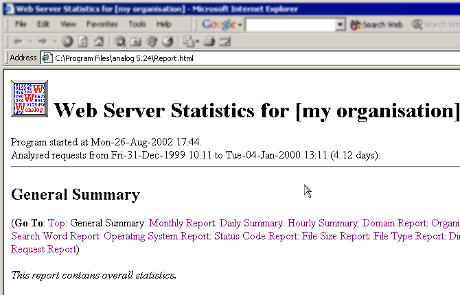

This analog How-To written by Simon Handfield
This version (1.0), created 21 September 2002
This How-To provides some basic information on how to get up and running with analog on Microsoft Windows.
The How-To covers:
Once you are comfortable with the topics covered in this How-To, I encourage you to read more from the analog documentation to make sure you are getting the most out of this very popular log analysis tool.
Download the latest version of analog from your nearest mirror site. The latest version at the time this How-To was written was 5.24.
You can download a pre-compiled executable if you have an Intel-compatible chip and Windows 95/NT or later...
Analog for Windows is distributed with all files organised in a zip archive, and so no installation is necessary. What you do need to do is extract all the files from the archive into an appropriate location on your PC.
The zip archive contains directory information for each file, so inside the directory to which you extract analog it will create its own install directory which is usually:
analog [version] where [version] is the version of analog you've downloaded (in my case 5.24)
The archive will also create subdirectories for you in this new directory which will contain documentation, example configurations, images and language files.
I'd recommend extracting the archive to your usual program files directory, which is usually C:\Program Files,
which will mean that, based on the latest archive file, your path to analog will be:
C:\Program Files\analog 5.24
Extract actionUse folder names is on (or all files will be extracted into the directory you select in the next step)C:\Program Files)Extract action.
Use folder names is on.
C:\Program Files.)
You should now have a directory (C:\Program Files\analog 5.24) with content similar to the following:
At this point, without doing any more, you actually have enough to run analog over the sample log file supplied (logfile.log) using the sample configuration file (analog.cfg.)
Testing that the installation succeeded is as simple as double-clicking the analog executable, analog.exe. It will run with its defaults, using the sample configuration file (analog.cfg) in the same directory as analog.exe.
When you double-click analog.exe, you should see a command prompt window or DOS window open, then without warning the window will close again after analog completes.
While analog probably ran successfully, you can't tell by watching the command
window. Instead, analog writes any errors to the file
errors.txt.
You can check your analog directory and you should find a report file, Report.html, if analog ran successfully:
Report.html in the directory and several PNG images: this is analog's output.Report.html or analog threw errors when you tried to run it, you may need to extract your downloaded zip archive again. Delete your analog install directory, and go back to installing.Report.html and you should see your first analog report open in your default web browser.
Report.html in the directory and several PNG images: this is analog's output" border="1">
You should find a file called Report.html in the directory and several PNG images: this is analog's output.

Double-click Report.html and you should see your first analog report open in your default web browser.
Now you have confirmed you can run analog successfully, you can go on and customise your configuration to analyse your own log files.
analog is a very powerful log analyser. This is great if you want to get very specific information from your log files. With power however also comes some complexity in configuring analog to give you what you want.
If you are just starting out, you are better to make small changes to your configuration, slowly working towards the reports that you want than leaping in and trying to create your own configuration file from scratch.
The sample configuration that comes with analog (analog.cfg) is a great place to start.
We'll use this as a starting point and make changes little by little to get the results we want.
This way you can always go back one step if you get a result you weren't expecting.
Let's start by backing up the original config file so we can retrieve it later if we really break things badly.
analog.cfg and call it analog.cfg.orig
Now we can start editing the original config file, analog.cfg.
You can edit it in any text editor, such as Notepad or Wordpad. Just make sure
to save it as plain text.
Once you start creating your own configuration file, you're likely to
encounter some errors. Analog normally writes these to the file
errors.txt, but you might find it more convenient to have them
written to the screen. To do that, find the line in the
analog.cfg file that says ERRFILE errors.txt. Put a
hash (#) at the beginning of that line, so it looks like #
ERRFILE errors.txt. The hash just means that that line is a comment, so
analog ignores it.
To read the errors, we'll still need to get that analog command window to wait for us to read its output instead of disappearing as soon as analog has finished.
To do this we'll open a command prompt window ourselves and call analog.exe from the command line.
Start buttonRun...cmd (WinNT/2000/XP) or command (Win9x/Me) and click OKStart button and click Run...
cmd (WinNT/2000/XP) or command (Win9x/Me) and click OK.
cd "program files\analog 5.24" and hit enteranalog and hit enterWe have just performed the same process as we did by double-clicking the analog executable, but this way we get to see if analog encounters any errors as it runs. This will come in very handy when you start to create your own configuration file.
Probably the first things you want to do are to change where the reports are written and to analyse your own log file.
Let's look at the line in analog.cfg that tells analog where to write its output:
OUTFILE Report.html
This tells analog to write its main report file to Report.html in the same directory as the analog executable.
If we run analog on a regular basis, we're going to overwrite our previous report each time we do so. Also this mixes our report files up with our program files and gets a bit messy.
Let's create a new directory where we'll put all our analog reports, and make the report name dynamic so we can run analog without overwriting previous reports.
d:\stats.)OUTFILE line to look like this: OUTFILE d:\stats\Report.htmlOUTFILE and LOGFILE commands for more info.)
FROM and TO commands (see documentation on FROM and TO commands) to tell analog the month for which the logs indicate usage
FROM 020801TO 020831OUTFILE d:\stats\%Y.%M.html
Running analog after this change causes it to output its report files to d:\stats with the report file name of 2002.08.html because I'd be running the report over a log file containing stats for March 2002. If I want to run this same report over a new set of logs next month, I'll modify the FROM and TO entries to 020901 and 020931, it will generate a report named 2002.09.html.
The image files that display graphs are generated dynamically by analog when it runs and these are stored in the same directory as the report file by default. However, they will not use the date as pert of their filename so will be overwritten with every new report run. All the html files for different months will point to the same graphs for the latest month.
To avoid this I'm going to use another command in my config file to save graphs with date-based file names in a new subdirectory to keep things tidy:
d:\stats for the graphs:d:\stats\chartsLOCALCHARTDIR "d:\stats\charts\%Y.%M."CHARTDIR "charts/%Y.%M."
The %Y.%M. segment in the last two config lines is not actually part of a directory name, but forms part of the chart filenames. It might have been nice to separate charts for each month into separate directories, but this requires the creation of a new directory each month, which is something analog can not do for you. Having one directory for your charts is not such a problem though as you can prepend your chart file names with dates.
Now your reports will be written to the directory of your choice and won't overwrite each other each month when you analyse your latest log.
The other important customisation you will want to make is to tell analog where you keep your log file so you don't have to copy or move it to the analog installation directory.
analog's default config file includes a pointer to a log file:
LOGFILE logfile.log
Because there is no drive letter or path information, just a file name, analog will look for this file in the same directory as the analog executable (analog.exe.)
Your log files are more likely to be in c:\WINNT\system32\LogFiles\W3SVC1 (the WindowsNT/2000 IIS default), or in some other directory to where you have transferred the from a remote web server.
My log file is stored in d:\log\apache and is called access.log.
To have analog process this log file, I'll change the LOGFILE config command:
LOGFILE d:\log\apache\access.log
I have no spaces in the path to my file, so I don't need to use quotes around it, but if you have spaces in your path you must include the entire path in quotes:
LOGFILE "c:\my logs\w3svc1\ex0203.log"
Running analog now should cause the program to run, analyse your chosen log file and output your report to your chosen destination.
There are other changes you will want to make to the configuration file to generate the report you want. You will notice that the images do not display correctly now.
The analog icon and the red bar icons in the individual reports are stored in the images subdirectory of your analog install directory. To fix this, you can move or copy this directory to the directory where you are writing your report files, or you can use the IMAGEDIR command to provide a virtual path to the images from your report.
You will also want to change the title of your report from the example [my organisation] value in the HOSTNAME command if you haven't already.
Work through the example configuration, reading the comprehensive analog documentation to determine what each line does and what other commands you might choose to use.
Once you have worked through the simple example configuration, examine some of the others in the examples subdirectory of your analog install directory.